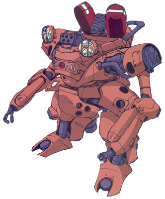

| Dracken E |
|
|  | |
General and Technical Data |
|
|
Unit type: Colony use mobile suit Operator: Riah Republic Fixed armaments: 1x 5-tube grenade launcher (1 round); Welding torch, acts as close combat weapon Optional armaments: Javelin launcher (4 round magazine), M134D |
|
| Technical and Historical Notes | |
|
A small retooled construction mobile worker, the Riah Republics Dracken E is weak when faced with Zeon or Federal model mobile suits, being designed primarily to fight unruly civilians and armored cars rather than for mobile suit on mobile suit combat.
Arming medium sized anti-tank weaponry and small welding torches that work as a standoff for a beam saber, the Dracken E is not entirely unarmed, and does mount AMBAC and reasonable maneuverability. A single grenade launcher rounds off the armament. Small armor plating gives them good resistance to handheld weaponry, but mobile suit weaponry will still tear them to shreds. However, many models are still used in colony defense forces, which cannot afford to purchase or maintain large numbers of Zaku I models. |
 RPG quick stats sheet
RPG quick stats sheet {kind=link}
{kind=link}